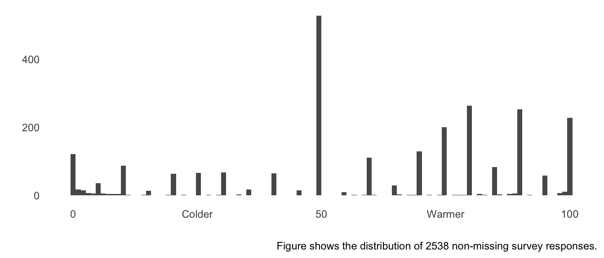
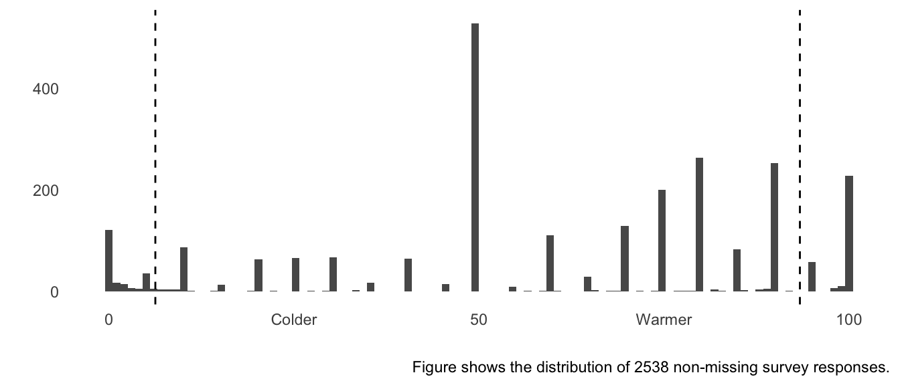
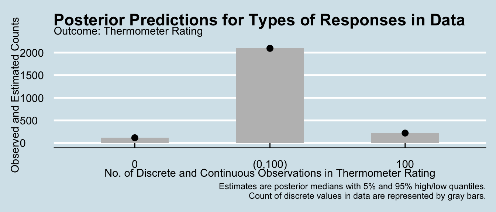
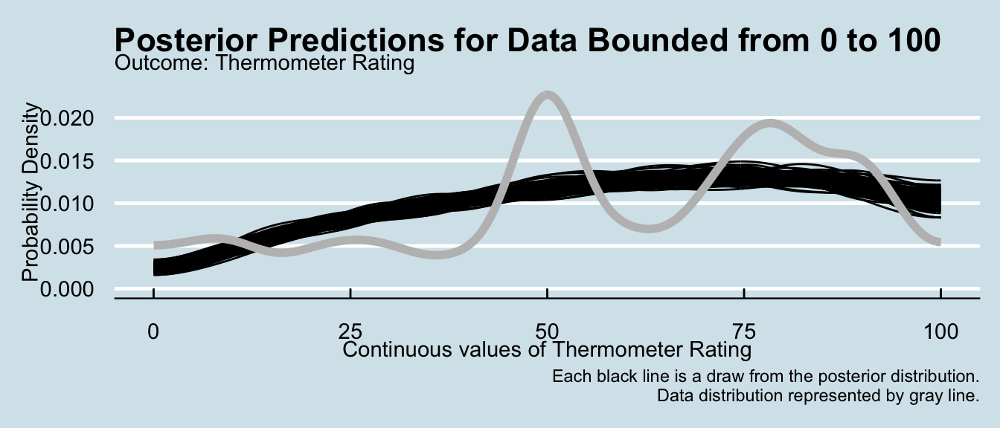
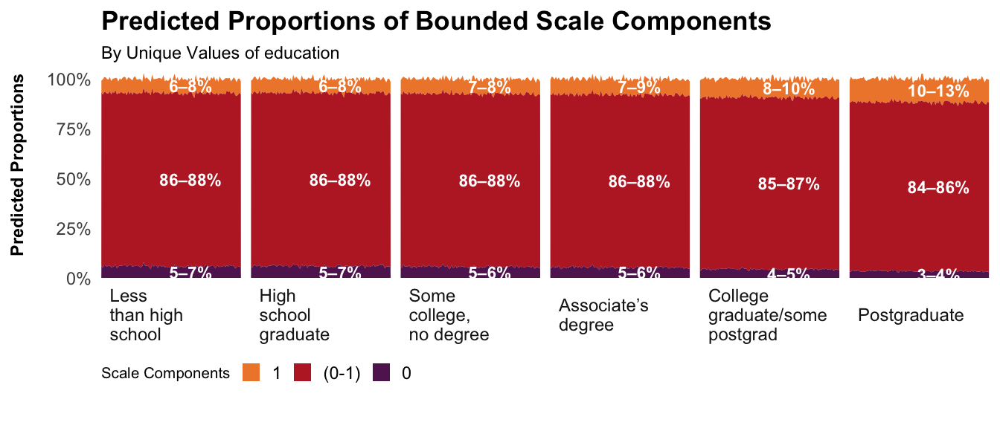
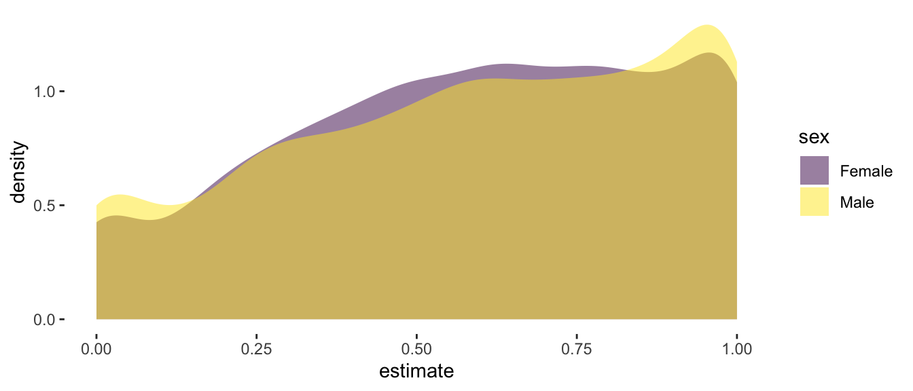
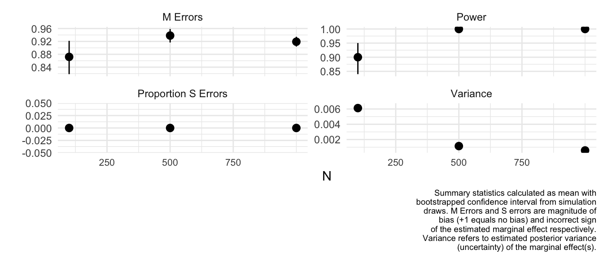

# whether to run models from scratch
run_model <- FIntroduction to ordbetareg
Overview
The ordered beta regression model is designed explicitly for data with upper and lower bounds, such as survey slider scales, dose/response relationships, and anything that can be considered a proportion or a percentage. This type of data cannot be fit with the standard beta regression model because the beta distribution does not allow for any observations at the bounds, such as a percentage/proportion of 0% or 100%. The ordered beta regression model solves this problem by combining the beta distribution with an ordinal distribution over continuous and discrete, or degenerate, observations at the bounds. It is an efficient model that produces intelligible estimates that also respect the bounds of the dependent variable.
Please note that this is not the only implementation of ordered beta regression. For more info on alternatives, including other statistical software packages like Python or Julia, see the package website.
This vignette covers a number of topics, from data preparation (Data Preparation), fitting a model ([Run In ordbetareg]), visualizing results (Visualization), interpreting results (How to Report Results), using multiple imputed datasets (Multivariate and Missing Data), performing mediation analysis (Multivariate Modeling and Mediation Analysis), modeling ancillary parameters like dispersion and cutpoints (Modeling Dispersion and Cutpoints), and power analysis for experimental designs (Power Analysis).
For more information about the ordered beta statistical distribution, I refer you to my paper on the model for more details (also there is an ungated version available here).
Support ordbetareg
If you’ve enjoyed using the package, consider buying some ordbetareg swag! Click the image below to go to the online store (I receive a few dollars from each order).
ordbetareg and brms
This notebook contains instructions for running the ordered beta regression model in the R package ordbetareg. ordbetareg is a front-end to brms, a very powerful regression modeling package based on the Stan Hamiltonian Markov Chain Monte Carlo sampler. I only show in this vignette a small part of the features which are available via brms, and I refer the user to the copious documentation describing the features of the brms package. Suffice it to say that most kinds of regression models can be fit with the software, including hierarchical, dynamic, nonlinear and multivariate models (or all of the above in combination). The ordbetareg package allows for all of these features to be used with the ordered regression model distribution by adding this distribution to brms.
Citation
The reproducible Quarto file this vignette is compiled from can be accessed from the package Github site.
If you use the model in a paper, please cite it as:
Kubinec, Robert. 2023. “Ordered Beta Regression: A Parsimonious, Well-Fitting Model for Continuous Data with Lower and Upper Bounds.” Political Analysis 31(4): 519–36. doi: 10.1017/pan.2022.20.
Underlying Stan Code
If you want the underlying Stan code (say to fit the model with cmdstanr), you can get it from this repo:
https://github.com/saudiwin/ordbetareg/blob/master/beta_logit_phireg.stan
This syntax is different from that used in the ordbetareg package, and is most useful if you want to derive your own custom version that makes use of Stan’s extensive features as a Bayesian estimation engine.
Data Preparation
In this vignette I use an empirical application from data from a Pew Forum survey built into the package to show how the package works. It is also possible to generate simulated ordered beta data using the rordbeta function, as I do later in this guide. The following plot shows a histogram of respondents’ views towards college professors based on a bounded 0 to 100 scale:
data("pew")
pew %>%
ggplot(aes(x=as.numeric(therm))) +
geom_histogram(bins=100) +
theme_minimal() +
theme(panel.grid=element_blank()) +
scale_x_continuous(breaks=c(0,25,50,75,100),
labels=c("0","Colder","50","Warmer","100")) +
ylab("") +
xlab("") +
labs(caption=paste0("Figure shows the distribution of ",sum(!is.na(pew$therm))," non-missing survey responses."))
The distributions of feelings towards college professors contains both degenerate (0 and 100) and continuous responses between 0 and 100. To model it, the outcome needs to be re-scaled to lie strictly between 0 and 1. However, it is not necessary to do that ahead of time as the ordbetareg package will do that re-normalization internally. I also do some other data processing tasks:
model_data <- select(pew,therm,age="F_AGECAT_FINAL",
sex="F_SEX_FINAL",
income="F_INCOME_FINAL",
ideology="F_IDEO_FINAL",
race="F_RACETHN_RECRUITMENT",
education="F_EDUCCAT2_FINAL",
region="F_CREGION_FINAL",
approval="POL1DT_W28",
born_again="F_BORN_FINAL",
relig="F_RELIG_FINAL",
news="NEWS_PLATFORMA_W28") %>%
mutate_at(c("race","ideology","income","approval","sex","education","born_again","relig"), function(c) {
factor(c, exclude=levels(c)[length(levels(c))])
}) %>%
# need to make these ordered factors for BRMS
mutate(education=ordered(education),
income=ordered(income))The completed dataset has 2538 observations.
Run In ordbetareg
The ordbetareg function will take care of normalizing the outcome and adding additional information necessary to estimate the distribution. Any additional arguments can be passed to the underlying brm function to use specific brm features. For example, in the code below I use the backend="cmdstanr" argument to brm(), which allows me to use the R package cmdstanr for estimating models. cmdstanr tends to have the most up to date version of Stan, though you must install it yourself.
What you need to pass to the ordbetareg function are the standard components of any R model: a formula and a dataset that has all the variables mentioned in the formula.
Multivariate and Missing Data
If you want to use some of brms more powerful techniques, such as multivariate modeling, you can also pass the result of a bf function call to the formula argument. Doing so allows you to use mixed distributions, such as modeling one response as ordered beta and the other as normal/Gaussian. I refer you to the brmsformula() function help for more details.
You can also make use of brms missing data imputation abilities if you pass a list of imputed datasets as a list and set the use_brms_multiple to TRUE. For more details on how to prepare data for brms multiple imputation, see https://cran.r-project.org/web/packages/brms/vignettes/brms_missings.html.
Example: Feeling Thermometer Towards Professors
To demonstrate some of the power of using brms as a regression engine, I will model education and income as ordinal predictors by using the mo() function in the formula definition. By doing so, we can get a single effect for education and income instead of having to use dummies for separate education/income categories. As a result, I can include an interaction between the two variables to see if wealthier more educated people have better views towards college professors than poorer better educated people. Finally, I include varying (random) census region intercepts.
if(run_model) {
ord_fit_mean <- ordbetareg(formula=therm ~ mo(education)*mo(income) +
(1|region),
data=model_data,
control=list(adapt_delta=0.95),
cores=1,chains=1,iter=500,
refresh=0)
# NOTE: to do parallel processing within chains
# add the options below
#threads=5,
#backend="cmdstanr"
#where threads is the number of cores per chain
# you must have cmdstanr set up to do so
# see https://mc-stan.org/cmdstanr/
} else {
data("ord_fit_mean")
}Because this model is somewhat complicated with multiple ordinal factors and multilevel intercepts, I use the option adapt_delta=0.95 to improve sampling and remove divergent transitions.
Priors
The default priors in ordbetareg are weakly informative for data that is scaled roughly between \([-10,10]\). Outside of those scales, you may want to increase the SD of the Normal prior on regression coefficients via the coef_prior_sd and/or phi_coef_prior_sd options to ordbetareg (depending on whether the prior is for the coefficients in the main outcome model or the auxiliary dispersion phi regression). If you need to set a specific prior on the intercept, pass values to the intercept_prior_mean/phi_intercept_prior_mean and intercept_prior_sd/phi_intercept_prior_sd parameters (you need to have values for both for the prior to be set correctly) to set a Normally-distributed prior on the intercept. You can also zero out the intercept by setting a tight prior around 0, such as intercept_prior_mean=0 and intercept_prior_sd=0.001.
If you need to do something more involved with priors, you can use the extra_prior option. This argument can take any brms-specified prior, including any of the many brms options for priors. If you want to set your own priors and ignore all the prior-related arguments, you can also use the manual_prior option and again pass a brms-compliant prior object. This is necessary if you want to change the cutpoints or model the cutpoints directly, as I explain below.
Setting manual/more specific priors are beyond the scope of the vignette, but I refer the reader to the brms documentation for more info.
Post-Estimation
Visualization
We can visualize the model cutpoints by showing them relative to the empirical distribution. To do so, we have to transform the cutpoints using the inverse logit function in R (plogis) to get back values in the scale of the response, and I have to exponentiate and add the first cutpoint to get the correct value for the second cutpoint. The plot shows essentially how spread-out the cutpoints are relative to the data, though it should be noted that the analogy is inexact–it is not the case that observations above or below the cutpoints are considered to be discrete or continuous. Rather, as distance from the cutpoints increases, the probability of a discrete or continuous response increases. Cutpoints that are far apart indicate a data distribution that shows substantial differences between continuous and discrete observations.
all_draws <- prepare_predictions(ord_fit_mean)
cutzero <- plogis(all_draws$dpars$cutzero)
cutone <- plogis(all_draws$dpars$cutzero + exp(all_draws$dpars$cutone))
pew %>%
ggplot(aes(x=therm)) +
geom_histogram(bins=100) +
theme_minimal() +
theme(panel.grid=element_blank()) +
scale_x_continuous(breaks=c(0,25,50,75,100),
labels=c("0","Colder","50","Warmer","100")) +
geom_vline(xintercept = mean(cutzero)*100,linetype=2) +
geom_vline(xintercept = mean(cutone)*100,linetype=2) +
ylab("") +
xlab("") +
labs(caption=paste0("Figure shows the distribution of ",sum(!is.na(pew$therm))," non-missing survey responses."))
The plot shows that the model sees significant heterogeneity between the discrete responses at the bounds and the continuous responses in the plot.
Posterior Predictive Plot
The best way to visualize model fit is to plot the full predictive distribution relative to the original outcome. Because ordered beta regression is a mixed discrete/continuous model, a separate plotting function, pp_check_ordbeta, is included that accurately handles the unique features of this distribution. This function returns a list with two plots, discrete and continuous, which can either be printed and plotted or further modified as ggplot2 objects.
The discrete plot, which is a bar graph, shows that the posterior distribution accurately captures the number of different types of responses (discrete or continuous) in the data. For the continuous plot, shown as a density plot with one line per posterior draw, the model can’t capture all of the modality in the distribution – there are effectively four separate modes – but it is reasonably accurate over the middle responses and the responses near the bounds.
# new theme option will add in new ggplot2 themes or themes
# from other packages
plots <- pp_check_ordbeta(ord_fit_mean,
ndraws=100,
outcome_label="Thermometer Rating",
new_theme=ggthemes::theme_economist())
plots$discrete
plots$continuous
The pp_check_ordbeta function can also show each posterior draw one at a time in an animated plot if the animate option is set to TRUE. This option requires the installation of the additional packages gganimate and transformr.
Heiss Plot
ordbetareg also includes a plot derived by the statistician Andrew Heiss. This plot visualizes the three components of the outcome–the lower bound, the middle continuous part, and the upper bound–as a function of a factor/discrete variable. This plot is helpful at understanding how discrete variables might be affecting the responses at the bounds (i.e., extreme responses). Importantly, this plot shows uncertainty by plotting these predictions for a set number of posterior draws (be careful about using too many draws as it can slow down the plot quite a bit).
Below is a Heiss plot for our example regression model by showing the predicted components of the outcome for each value of education:
# turn off caption as it doesn't fit well in vignette mode
plot_heiss(ord_fit_mean, grouping_fac="education", ndraws = 100,
plot_caption = "")
As can be seen, the plot allows for intuitive comparisons of the predicted values at the bounds of the scale across levels of a discrete predictor.
How to Report Results
For many analyses, coefficient tables are quite valuable for reporting model results. I first show how to report the raw coefficients, although it is important to note that these coefficients are not all that interesting as they are on the logit scale (and no, you can’t interpret them as log-odds or what have you). It is more interesting to report the [marginal effects], as I define below, and leave the raw coefficients in an appendix.
We can see the raw coefficients from the model in table form using the modelsummary package, which has support for brms models. We’ll specify only confidence intervals as other frequentist statistics have no Bayesian analogue (i.e. p-values). We’ll also specify only the main effects of the ordinal predictors, and give them more informative names.
library(modelsummary)
modelsummary(ord_fit_mean,statistic = "conf.int",
metrics = "RMSE",
coef_map=c("b_Intercept"="Intercept",
"bsp_moeducation"="Education",
"bsp_moincome"="Income",
"bsp_moeducation:moincome"="EducationXIncome"))| (1) | |
|---|---|
| Intercept | 0.183 |
| [-0.013, 0.388] | |
| Education | 0.115 |
| [0.014, 0.188] | |
| Income | -0.052 |
| [-0.090, -0.013] | |
| EducationXIncome | 0.007 |
| [-0.008, 0.023] | |
| Num.Obs. | 2431 |
| RMSE | 0.29 |
Note that this plot does not show the cut point coefficients or phi due to the use of the coef_map function. Removing that argument would output all coefficients. modelsummary tables have many more options, including output to both html and latex formats. I refer the reader to the package documentation for more info.
As I mentioned earlier, you can interpret sign and significance from the raw coefficients, but substantively, you need marginal effects (see below).
Marginal Effects
There is a related package, marginaleffects, that allows us to convert these coefficients into more meaningful marginal effect estimates, i.e., the effect of the predictors expresses as the actual change in the outcome on the 0 - 1 scale. If those aren’t the original bounds of your scale, you can convert the effects to any bounded scale as well (such as -5 and 78 or 1 and 100).
Because we have two variables in our model that are both ordinal in nature, marginaleffects will produce an estimate of the marginal effect of each value of each ordinal predictor. I use the avg_slopes function to convert the ordbetareg model to a data frame of marginal/conditional effects in the scale of the outcome that can be easily printed:
avg_slopes(ord_fit_mean, variables="education") %>%
select(Variable="term",
Level="contrast",
`5% Quantile`="conf.low",
`Posterior Mean`="estimate",
`95% Quantile`="conf.high") %>%
knitr::kable(caption = "Marginal Effect of Education on Professor Thermometer",
format.args=list(digits=2),
align=c('llccc'))| Variable | Level | 5% Quantile | Posterior Mean | 95% Quantile |
|---|---|---|---|---|
| education | Associate’s degree - Less than high school | 0.0157 | 0.070 | 0.129 |
| education | College graduate/some postgrad - Less than high school | 0.0795 | 0.130 | 0.177 |
| education | High school graduate - Less than high school | -0.0048 | 0.015 | 0.055 |
| education | Postgraduate - Less than high school | 0.1500 | 0.201 | 0.245 |
| education | Some college, no degree - Less than high school | 0.0059 | 0.048 | 0.101 |
We can see that we have separate marginal effects for each level of education due to modeling it as an ordinal predictor. At present the avg_slopes() function cannot calculate a single effect, though that is possible manually. As we can see with the raw coefficient in the table above, the marginal effects are all positive, though the magnitude varies across different levels of education.
Note as well that the slopes function can calculate unit-level (row-wise) estimates of the predictors on the outcome (see marginaleffects documentation for more info).
Multiple Imputation
ordbetareg supports brms functions for using multiple imputed datasets and for multivariate (multiple response) modeling, at least with two response variables. brms is able to apply the model to a list of multiple-imputed datasets (created with other packages such as mice) and then combine the resulting models into a single posterior distribution, which makes it very easy to do inference. I first demonstrate briefly how to do this and also multivariate modeling, but I refer the user to the brms documentation for more details.
In the code below I use the rordbeta function to simulate some ordered beta responses given a covariate, then create missing values by replacing some values at random with NA. I use the mice package to impute this missing data, creating two imputed datasets which I then feed into ordbetareg and set the use_brm_multiple option to TRUE:
# simplify things by using one covariate within the [0,1] interval
X <- runif(n = 100,0,1)
outcome <- rordbeta(n=100,mu = 0.3 * X, phi =3, cutpoints=c(-2,2))
# set 10% of values of X randomly to NA
X[runif(n=100)<0.1] <- NA
# create a list of two imputed datasets with package mice
mult_impute <- mice::mice(data=tibble(outcome=outcome,
X=X),m=2,printFlag = FALSE) %>%
mice::complete(action="all")
# pass list to the data argument and set use_brm_multiple to TRUE
if(run_model) {
fit_imputed <- ordbetareg(formula = outcome ~ X,
data=mult_impute,
use_brm_multiple = T,
cores=1,chains=1, iter=500)
} else {
data('fit_imputed')
}
# all functions now work as though the model had only one dataset
# imputation uncertainty included in all results/analyses
# marginal effects, though, only incorporate one imputed dataset
knitr::kable(avg_slopes(fit_imputed))| term | estimate | conf.low | conf.high | predicted_lo | predicted_hi | predicted | tmp_idx |
|---|---|---|---|---|---|---|---|
| X | 0.2925917 | 0.1619268 | 0.4435257 | 0.179184 | 0.1792375 | 0.1792107 | 1 |
modelsummary(fit_imputed,statistic = 'conf.int',metrics="all")| (1) | |
|---|---|
| b_Intercept | -3.652 |
| [-4.451, -2.907] | |
| b_X | 2.453 |
| [1.507, 3.571] | |
| phi | 3.784 |
| [2.258, 6.048] | |
| Num.Obs. | 100 |
| R2 | 0.091 |
| ELPD | -1.6 |
| ELPD s.e. | 22.4 |
| LOOIC | 3.2 |
| LOOIC s.e. | 44.7 |
| WAIC | 3.1 |
| RMSE | 0.25 |
Multivariate Modeling and Mediation Analysis
In the following code, I show how to model a Gaussian/Normally-distributed variable and an ordered beta regression model together. This is useful when examining the role of a mediator, which we will simulate here as a Normally-distributed variable Z. In order to specify a different distribution than ordered beta, the family parameter must be specified in the bf formula function. Otherwise the function assumes that the distribution is ordered beta.
# generate a new Gaussian/Normal outcome with same predictor X and mediator
# Z
X <- runif(n = 100,0,1)
Z <- rnorm(100, mean=3*X)
# use logit function to map unbounded continuous data to [0,1] interval
# X is mediated by Z
outcome <- rordbeta(n=100, mu = plogis(.4 * X + 1.5 * Z))
# use the bf function from brms to specify two formulas/responses
# set_rescor must be FALSE as one distribution is not Gaussian (ordered beta)
# OLS for mediator
mod1 <- bf(Z ~ X,family = gaussian)
# ordered beta
mod2 <- bf(outcome ~ X + Z)
if(run_model) {
fit_multivariate <- ordbetareg(formula=mod1 + mod2 + set_rescor(FALSE),
data=tibble(outcome=outcome,
X=X,Z=Z),
cores=1,chains=1, iter=500)
}
# need to calculate each sub-model's marginal effects separately
knitr::kable(avg_slopes(fit_multivariate,resp="outcome"))| term | estimate | conf.low | conf.high |
|---|---|---|---|
| X | -0.0870639 | -0.2572231 | 0.0803635 |
| Z | 0.2040621 | 0.1539249 | 0.2380422 |
| outcome | 0.0000000 | 0.0000000 | 0.0000000 |
knitr::kable(avg_slopes(fit_multivariate, resp="Z"))| term | estimate | conf.low | conf.high |
|---|---|---|---|
| X | 2.921544 | 2.195102 | 3.530645 |
| Z | 0.000000 | 0.000000 | 0.000000 |
| outcome | 0.000000 | 0.000000 | 0.000000 |
suppressWarnings(modelsummary(fit_multivariate,statistic = "conf.int",
metrics="none"))| (1) | |
|---|---|
| b_Z_Intercept | 0.108 |
| [-0.315, 0.496] | |
| b_Z_X | 2.922 |
| [2.195, 3.531] | |
| sigma_Z | 0.990 |
| [0.882, 1.139] | |
| b_outcome_Intercept | 0.039 |
| [-0.767, 0.731] | |
| b_outcome_X | -0.873 |
| [-2.578, 0.814] | |
| b_outcome_Z | 2.034 |
| [1.432, 2.729] |
To estimate the indirect effect of X on outcome that is mediated by Z, we can use the package bayestestR:
bayestestR::mediation(fit_multivariate)
#> # Causal Mediation Analysis for Stan Model
#>
#> Treatment: X
#> Mediator : Z
#> Response : outcome
#>
#> Effect | Estimate | 95% ETI
#> ---------------------------------------------------
#> Direct Effect (ADE) | -0.873 | [-2.578, 0.814]
#> Indirect Effect (ACME) | 5.912 | [ 3.890, 8.608]
#> Mediator Effect | 2.034 | [ 1.432, 2.729]
#> Total Effect | 5.037 | [ 3.148, 7.619]
#>
#> Proportion mediated: 117.36% [76.87%, 157.86%]Because the effect of Z on the outcome is positive, and X has a positive direct (unmediated effect) on the outcome, the total effect of X on the outcome is larger than the direct effect of X without considering mediation.
Modeling Dispersion and Cutpoints
In this section I show how you can use brms distributional regression features to also model either the dispersion parameter phi or the cutpoints using covariates.
Modeling Dispersion (phi)
As I explain in the paper, one of the main advantages of using a Beta regression model is its ability to model the dispersion among respondents not just in terms of variance (i.e. heteroskedasticity) but also the shape of dispersion, whether it is U or inverted-U shaped. Conceptually, a U shape would imply that respondents are bipolar, moving towards the extremes. An inverted-U shape would imply that respondents tend to cluster around a central value. We can predict these responses conditionally in the sample by adding predictors for phi, the scale/dispersion parameter in the Beta distribution. Higher values of phi imply a uni-modal distribution clustered around a central value, with increasing phi implying more clustering. Lower values of phi imply a bi-modal distribution with values at the extremes. Notably, these effects are calculated independently of the expected value, or mean, of the distribution, so values of phi will produce different shapes depending on the average value.
The one change we need to make to fit this model is to add a formula predicting phi in the code below. Because we now have two formulas–one for the mean and one for dispersion–I use the bf function to indicate these two sub-models. I also need to specify phi_reg to be TRUE because some of the priors will change (or if you want to be adventurous, use the manual_prior option).
Because there is no need to model the mean, I leave the first formula as therm ~ 1 with the 1 representing only an intercept, not a covariate. I then specify a separate model for phi with an interaction between age and sex to see if these covariates are associated with dispersion. I set phi_reg to "only" because I am only including covariates for predicting phi instead of also therm (in which case I would want to set the option to "both").
if(run_model) {
ord_fit_phi <- ordbetareg(bf(therm ~ 1,
phi ~ age + sex),
phi_reg = "only",
data=model_data,
cores=2,chains=2,iter=500,
refresh=0)
# NOTE: to do parallel processing within chains
# add the options below
#threads=threading(5),
#backend="cmdstanr"
#where threads is the number of cores per chain
# you must have cmdstanr set up to do so
# see https://mc-stan.org/cmdstanr/
} else {
data("ord_fit_phi")
}We can quickly examine the raw coefficients:
summary(ord_fit_phi)
#> Family: ord_beta_reg
#> Links: mu = identity; phi = log; cutzero = identity; cutone = identity
#> Formula: therm ~ 1
#> phi ~ age + sex
#> Data: data (Number of observations: 2535)
#> Draws: 2 chains, each with iter = 500; warmup = 250; thin = 1;
#> total post-warmup draws = 500
#>
#> Regression Coefficients:
#> Estimate Est.Error l-95% CI u-95% CI Rhat Bulk_ESS Tail_ESS
#> Intercept 0.31 0.02 0.27 0.36 1.00 508 376
#> phi_Intercept 0.99 0.09 0.83 1.14 1.00 255 419
#> phi_age30M49 0.05 0.09 -0.12 0.23 1.01 244 259
#> phi_age50M64 -0.04 0.09 -0.22 0.13 1.01 226 377
#> phi_age65P -0.13 0.10 -0.33 0.06 1.01 281 360
#> phi_sexFemale 0.13 0.05 0.03 0.22 1.00 375 384
#>
#> Further Distributional Parameters:
#> Estimate Est.Error l-95% CI u-95% CI Rhat Bulk_ESS Tail_ESS
#> cutzero -2.70 0.10 -2.90 -2.51 1.00 406 336
#> cutone 1.67 0.02 1.63 1.72 1.00 361 374
#>
#> Draws were sampled using sampling(NUTS). For each parameter, Bulk_ESS
#> and Tail_ESS are effective sample size measures, and Rhat is the potential
#> scale reduction factor on split chains (at convergence, Rhat = 1).However, these are difficult to interpret as they relate to the Beta distribution, which is highly nonlinear. Generally speaking, higher values of phi mean the distribution is more concentrated around a single point. Lower values imply the distribution is more dispersed to the point that it actually becomes bi-modal, meaning that responses could be close to either 0 or 1 but are unlikely in the middle.
Because phi is a dispersion parameter, by definition the covariates have no effect on the average value. As a result, we’ll need to use the posterior_predict function in brms if we want to get an idea what the covariates do. We don’t have any fancy packages to do this for us, so we’ll have to pass in two data frames, one with sex equal to female and one with sex equal to male. We’ll want each data frame to have each unique value of age in the data.
# we can use some dplyr functions to make this really easy
female_data <- distinct(model_data, age) %>%
mutate(sex="Female")
male_data <- distinct(model_data, age) %>%
mutate(sex="Male")
to_predict <- bind_rows(female_data,
male_data) %>%
filter(!is.na(age))
pred_post <- posterior_predict(ord_fit_phi,
newdata=to_predict)
# better with iterations as rows
pred_post <- t(pred_post)
colnames(pred_post) <- 1:ncol(pred_post)
# need to convert to a data frame
data_pred <- as_tibble(pred_post) %>%
mutate(sex=to_predict$sex,
age=to_predict$age) %>%
gather(key="iter",value='estimate',-sex,-age)
data_pred %>%
ggplot(aes(x=estimate)) +
geom_density(aes(fill=sex),alpha=0.5,colour=NA) +
scale_fill_viridis_d() +
theme(panel.background = element_blank(),
panel.grid=element_blank())
We can see that the female distribution is more clustered around a central value – 0.75 – than are men, who are somewhat more likely to be near the extremes of the data. However, the movement is modest, as the value of the coefficient suggests. Regression on phi is useful when examining polarizing versus clustering dynamics in the data.
Modeling Cutpoints
You can also use brms distributional regression to have covariates that predict the location of the cutpoints. This type of regression would be useful if you want to see if there is variation in the heterogeneity of the scale (i.e., how extreme the bounds are) across levels of a factor. While this is likely only relevant for specific research questions, I include example code below for how to fit this model in case it is of interest. Note that the manual_prior option must be used to set priors on regression coefficients as otherwise the model will not have any priors on these coefficients and will not fit well.
# we'll use our data, although we won't fit this model
cutpoint_mod <- ordbetareg(formula=bf(therm ~ education +
(1|region),
cutzero ~ education,
cutone ~ education),
data=model_data,
manual_prior=set_prior("normal(0,5)") +
set_prior("normal(0,5)", class="b",dpar="cutone") +
set_prior("normal(0,5)", class="b",dpar="cutzero"),
control=list(adapt_delta=0.95),
cores=1,chains=1,iter=500,
refresh=0)In the brms code above, cutzero is the bottom cutpoint and cutone is the top cut point, and they each receive their own formula in addition to the main formula for the response. These three formulas can be combined with the bf function as shown above. I also set loosely informative Normal priors on the regression coefficients for each of these three sub-models (note you must set explicit priors for both cutzero and cutone). These predictors will then appear in the summary function with cutzero or cutone appended to the name of the predictor (i.e. education).
Power Analysis
There are two ways of doing power analysis if you want to see the effect of a treatment on a proportion/percentage outcome. First is using the sim_ordbeta function that is a part of ordbetareg. This function is simple but useful so long as the experimental design isn’t too complicated. For more robust designs, I also show how you can use the powerful DeclareDesign package to model power analysis.
sim_ordbeta function
Finally, we can also simulate data from the ordered beta regression model with the sim_ordbeta function. This is useful either for examining how different parameters interact with each other, or more generally for power calculation by iterating over different possible sample sizes. I demonstrate the function here, though note that the vignette loads saved simulation results unless run_model is set to TRUE. Because each simulation draw has to estimate a model, it can take some time to do calculations. Using multiple cores a la the cores option is strongly encouraged to reduce processing time.
To access the data simulated for each run, the return_data=TRUE option can be set. To get a single simulated dataset, simply use this option combined with a single iteration and set of parameter values. The data are saved as a list in the column data in the returned data frame. The chunk below examines the first 10 rows of a single simulated dataset (note that the rows are repeated k times for each iteration, while there is one unique simulated dataset per iteration). Each predictor is listed as a Var column from 1 to k, while the simulated outcome is in the outcome column.
# NOT RUN IN THE VIGNETTE
single_data <- sim_ordbeta(N=100,iter=1,
return_data=T)
# examine the first dataset
knitr::kable(head(single_data$data[[1]]))By default, the function simulates continuous predictors. To simulate binary variables, such as in a standard experimental design, use the beta_type function to specify "binary" predictors and treat_assign to determine the proportion assigned to treatment for each predictor. For a standard design with only one treatment variable, we’ll also specify that k=1 for a single covariate. Finally, to estimate a reasonable treatment effect, we will specify that beta_coef=0.5, which equals an increase of .5 on the logit scale. While it can be tricky to know a priori what the marginal effect will be (i.e., the actual change in the outcome), the function will calculate marginal effects and report them, so you can play with other options to see what gets you marginal effects/treatment effects of interest.
if(run_model) {
sim_data <- sim_ordbeta(N=c(250,500,750),
k=1,
beta_coef = .5,
iter=100,cores=10,
beta_type="binary",
treat_assign=0.3)
} else {
data("sim_data")
}For example, in the simulation above, the returned data frame stores the true marginal effect in the marg_eff column, and lists it as 0.284, which is quite a large effect for a \([0,1]\) outcome. The following plot shows some of the summary statistics derived by aggregating over the iterations of the simulation. Some of the notable statistics that are included are power (for all covariates \(k\)), S errors (wrong sign of the estimated effect) and M errors (magnitude of bias). As can be seen, issues of bias decline markedly for this treatment effect size and a sample of 500 or greater has more than enough power.
sim_data %>%
select(`Proportion S Errors`="s_err",N,Power="power",
`M Errors`="m_err",Variance="var_marg") %>%
gather(key = "type",value="estimate",-N) %>%
ggplot(aes(y=estimate,x=N)) +
#geom_point(aes(colour=model),alpha=0.1) +
stat_summary(fun.data="mean_cl_boot") +
ylab("") +
xlab("N") +
scale_x_continuous(breaks=c(250,500,750)) +
scale_color_viridis_d() +
facet_wrap(~type,scales="free_y",ncol = 2) +
labs(caption=stringr::str_wrap("Summary statistics calculated as mean with bootstrapped confidence interval from simulation draws. M Errors and S errors are magnitude of bias (+1 equals no bias) and incorrect sign of the estimated marginal effect respectively. Variance refers to estimated posterior variance (uncertainty) of the marginal effect(s).",width=50)) +
guides(color=guide_legend(title=""),
linetype=guide_legend(title="")) +
theme_minimal() +
theme(plot.caption = element_text(size=7),
axis.text.x=element_text(size=8))
While the sim_ordbeta function has the ability to iterate over N, it is of course possible to do more complex experiments by wrapping the function in a loop and passing different values of other parameters, such as treat_assign.
More Powerful Power Analyses with DeclareDesign
The ordered beta distribution can also be used in tandem with DeclareDesign, a robust R software package for power analysis (see free online book here). To do so, we use a helper function around the R package marginaleffects to allow for DeclareDesign to calculate the effect of a treatment on a bounded 0-1 outcome. We also make use of the ordbetareg functionality of the glmmTMB package (https://github.com/glmmTMB/glmmTMB) as we need to fit many models very quickly.
You could also substitute the true ordbetareg function here, although that would require fitting many models with brms models. Of course, if you are using unique features in brms like missing data imputation or multivariate modeling, then you’ll need to replace the glmmTMB code below with ordbetareg::ordbetareg.
In the code below I use the ordered beta distribution function rordbeta to simulate \(Y\) given an average response \(mu\) and a dispersion parameter value for \(phi\). I also have to pass cutpoints on the logit scale.
library(DeclareDesign)
#> Loading required package: randomizr
#> Loading required package: fabricatr
#> Loading required package: estimatr
#>
#> Attaching package: 'DeclareDesign'
#> The following object is masked from 'package:modelsummary':
#>
#> get_estimates
#> The following object is masked from 'package:ggplot2':
#>
#> vars
#> The following object is masked from 'package:dplyr':
#>
#> vars
# helper function for glmmTMB ordbetareg fit
tidy_avg_slopes <- function(x) {
tidy(avg_slopes(x))
}
# first, a simulated proportion using rordbeta (ordered beta distribution)
# see https://osf.io/preprints/socarxiv/2sx6y
# cutpoints = number of observations at the bound (i.e. 0 or 1)
# phi = dispersion, a value of 1 means relatively "flat"
design_rordbeta <-
declare_model(
N = 100,
potential_outcomes(Y ~ rordbeta(N, mu = .5 + .05*Z,phi = 1,
cutpoints=c(-3,3)
))
) +
declare_inquiry(ATE = 0.05) +
declare_assignment(Z = complete_ra(N, m = 50)) +
declare_measurement(Y = reveal_outcomes(Y ~ Z)) +
declare_estimator(Y ~ Z, .method = glmmTMB::glmmTMB, inquiry = "ATE",
family=glmmTMB::ordbeta,
.summary= tidy_avg_slopes,
term="Z")Note that the value for \(mu\) must be strictly bounded between 0 and 1. You could use the logit link function (R function plogis) to allow for more sophisticated forms of linear models. DeclareDesign works best on the un-transformed (real) scale here, so I use a value for the ATE of 0.05 to ensure it stays within 0 and 1. I also include a separate predictor \(Z\) with an effect of +0.05.
The declare_estimator function above is how we include ordbetareg as a model to test. As I mentioned, I pass the glmmTMB fitting function to .method as it uses conventional MLE and is much faster. Generally this works fine as power analysis doesn’t need to have all the fancy features. If you need them, though, you could always pass in ordbetareg::ordbetareg to the .method argument. I also pass in the little helper function tidy_avg_slopes above (be sure to also load the marginaleffects package) to pull out treatment effects on the un-transformed (0 to 1) scale.
With this code, you have a fully featured experimental design that can be further analyzed with DeclareDesign’s many options (again, see the book link above). To demonstrate usage, I include code below that compares using ordbetareg to model the outcome as a proportion versus dichotomizing the outcome by rounding to 0 or 1. The comparison shows that the latter method is biased relative to the true ATE effect (!!).
Note that this code may take some time to run as uses simulation techniques to derive the power code. You can use the future package to parallelize over multiple cores to speed things up.
# create two designs with identical treatment effects/expected values
# first uses rordbeta to generate proportion in [0,1]
# second uses rordbeta to generate proportion in [0,1], then
# dichotomizes to 0 or 1 by rounding at 0.5
# compare to see which has greater power given same number of obsevations
# & check for bias
# equivalent to dichotomizing (if a proportion)
design_dichot <-
declare_model(
N = 100,
potential_outcomes(Y ~ as.numeric(rordbeta(N, mu = .5 + .05*Z,phi = 1,
cutpoints=c(-3,3))>0.5))
) +
declare_inquiry(ATE = 0.05) +
declare_assignment(Z = complete_ra(N, m = 50)) +
declare_measurement(Y = reveal_outcomes(Y ~ Z)) +
declare_estimator(Y ~ Z, .method = lm_robust, inquiry = "ATE")
# NB: DeclareDesign is using lm_robust as it's default estimation
# However, it should be unbiased for the mean/expected value for the
# binomial/dichotomized model
diagnosands <-
declare_diagnosands(bias = mean(estimate - estimand),
power = mean(p.value <= 0.05))
# compare in terms of bias on the ATE & Power
diagnose_design(design_rordbeta, diagnosands = diagnosands)
diagnose_design(design_dichot, diagnosands = diagnosands)